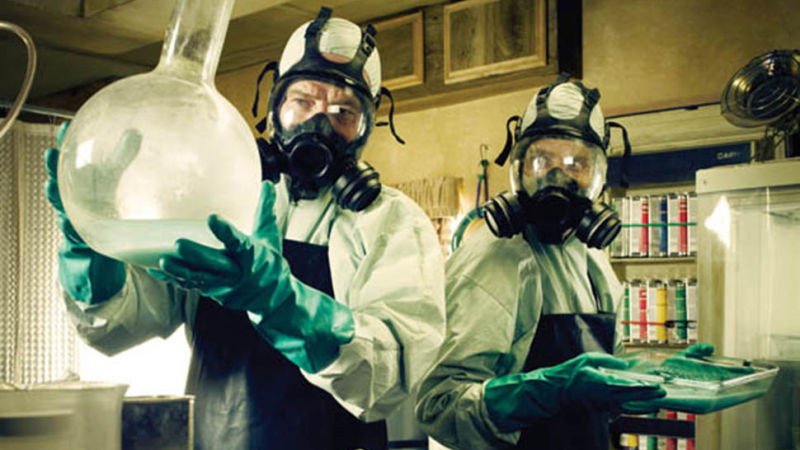

When chemistry teacher Walter White is diagnosed with Stage III cancer and given only two years to live, he decides he has nothing to lose. He lives with his teenage son, who has cerebral palsy, and his wife, in New Mexico. Determined to ensure that his family will have a secure future, Walt embarks on a career of drugs and crime. He proves to be remarkably proficient in this new world as he begins manufacturing and selling methamphetamine with one of his former students. The series tracks the impacts of a fatal diagnosis on a regular, hard working man, and explores how a fatal diagnosis affects his morality and transforms him into a major player of the drug trade.

Walt unties Jesse, puts a gasmask on him, and drops him in the passenger seat, returning to the frantic opening scene. With the sound of sirens closing in, Walt stands in the middle of the road then tries to shoot himself. To his dismay, the safety is on. His efforts to unlock it simply result in a pointless misfire. Suddenly, fire trucks, not police cars, appear. Walter stashes the gun in the back of his underwear. Jesse, sporting a black eye, comes out to join him. Walt's first day as a meth cook leaves him spent, shaken, but also invigorated. Back at home, he meets his wife's troubled queries with atypical sexual aggression which leaves her asking somewhat stunned: "Walt, is that you?"